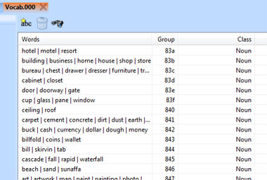
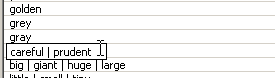

Important
This section applies to SCI0 only
Vocabs¶
SCI0 uses vocab resources for a few different purposes. The important one (that SCICompanion lets you edit) is the one that contains the words the SCI parser understands. This is what tells the game what words it should understand, and how they are used, so that the player can type things like “look at car”.
This resource is usually vocab.000 (in some of Sierra’s game, it was vocab.900). Open the game’s vocab.000, and you will see the vocab editor.
The words are listed in the view, along with their Group (not significant for editing) and Class (the type of word it is). Synonyms are grouped together on one line.
Overview¶
A vocabulary list is a collection of words to be rcognized by the game’s parser. They are used for objects, actions and modifiers.
Examples of vocabulary are nouns, adjectives, adverbs, prepositions. Each vocab has a different format and purpose. It contains the game’s vocabulary. For example, if the player types “look”, it checks this to see if the word is in the game’s vocabulary. If it is, it checks what type of word it is (ie. noun, verb, etc.) and evaluates it.
All words that can be inputted by the user must reside in the vocabulary in order for the parser to accept the user input, with the exception of word suffixes (see below).
It is critical that the correct parts of speech are associated to each vocab word for the parser to interpret what the user is attempting to communicate. It is not recommended to change parts-of-speech of a word just to get the desired result in your code. There is an occasional need for it, but before doing it explore all other avenues.
Note that the SCI0 template game has most (if not all) of the vocabulary words from all SCI0 games. This means that the need for adding new words will probably be limited to nouns and qualifying adjectives (and perhaps some imperative verbs & adverbs). When adding new words, it is recommended to find other similar words & model the parts-of-speech from them.
Word suffixes: It is not necessary to add word suffixes to the vocabulary words unless the game developer would like to make a distinction in their code (specifically in the Said() string syntax) between two words with the same root word (example: tree vs. trees, jump vs. jumping, etc). Suffixes are predefined in another vocab resource not directly accessible for modification within SCICompanion. This means that if ‘tree’ is defined in the vocab (and it’s plural is not), the user is free to enter the word ‘trees’ & the parser will accept the input, ultimately converting the word down to it’s base word ‘tree’.
Synonyms: The use of synonyms is encouraged. Any number of synonyms can be used for a word; they reside with the word in vocabulary, separated with the vertical bar (|) character. Using synonyms limit the amount of code a developer needs to write to handle various inputs & makes it easier to the game player for find a word that matches the intended meaning. Take for example the word ‘door’. It could by matched in the input phrase ‘open door’. However, if we added a few synonyms to door (like this: ‘door | portal | gateway | opening’), then the user could enter ‘open portal’ or ‘open gateway’, and the developer’s code would work as if the user inputted ‘open door’.
Adding a word¶
To add a word to the game’s vocabulary, click the New word button  , or right click in the view and choose New word. Type in your new word and hit enter.
, or right click in the view and choose New word. Type in your new word and hit enter.
Deleting a word¶
Click on the word and press DELETE.
Looking up a word¶
There are two ways to find a word in the vocabulary editor. You can use the Find button  , or simply just type the letters of the word into the view. It will automatically scroll into view and be selected.
, or simply just type the letters of the word into the view. It will automatically scroll into view and be selected.
Editing words¶
Find the word you want to edit, and right-click Rename or press F2.
Adding synonyms¶
To add a word as a synonym of another word, just add it to the end of the first word, separated by a space or a ‘|’ character.
Specifying the word class¶
The class of a word (e.g. verb, noun, etc...) affects how the parser will interpret it. Consult the SCI tutorials to learn more.
Right-click on the word and check or uncheck one of the nine classes. Mulitple classes can be applied to a word.

Tip
Words can also be added directly to the vocab resource by using the right-click menu in the script editor.